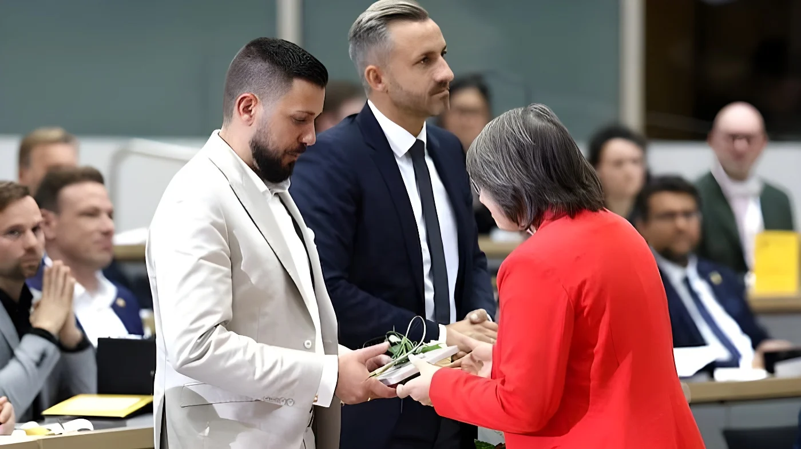

Le 6 octobre 2026, à Magdebourg, le nouveau Landtag de Saxe-Anhalt a élu Tobias Rausch, 35 ans, à sa présidence par 48 voix sur 82 exprimées. C'est la première fois qu'un élu de l'AfD occupe la présidence d'un parlement régional en Allemagne. L'AfD (39 sièges) et le BSW (5 sièges) ne totalisant que 44 voix, au moins quatre bulletins venus d'autres groupes se sont ajoutés lors d'un scrutin secret.
La séance constitutive de la 9e législature s'est ouverte le 6 octobre à 11 h, avec 82 des 83 députés présents. Au bulletin secret, Tobias Rausch (AfD) a obtenu 48 voix pour, 29 contre et 5 abstentions, et succède au conservateur Gunnar Schellenberger. Né en 1990 en Bavière, siégeant au Landtag depuis 2016, il devient le premier élu de l'AfD à diriger un parlement régional, soit la première fonction protocolaire du Land, à l'issue de les élections du 6 septembre, remportées par son parti avec environ 44 % des voix.
Le vote sur les vice-présidences a confirmé la tendance : Hans-Thomas Tillschneider (AfD), figure très controversée du parti, a été élu avec 44 voix, tandis que Carsten Borchert (CDU) l'était avec 64 voix. En revanche, le candidat du SPD, Armin Willingmann, a été rejeté par 33 voix pour et 48 contre au troisième tour, et le poste de troisième vice-président reste vacant.
| Poste | Élu(e) — voix |
|---|---|
| Président | Tobias Rausch (AfD) — 48 voix |
| Vice-président | Hans-Thomas Tillschneider (AfD) — 44 voix |
| Vice-président | Carsten Borchert (CDU) — 64 voix |
| Vice-président | Armin Willingmann (SPD) — rejeté : 33 pour, 48 contre |
Séance constitutive à Magdebourg : Rausch est élu président du Landtag.
Élections régionales : l'AfD arrive largement en tête, avec environ 44 % des voix.
Élections régionales : CDU 37,1 %, AfD 20,8 %.
Tobias Rausch entre au Landtag sous les couleurs de l'AfD.
L'arithmétique intrigue. L'AfD compte 39 sièges et le BSW cinq, qui avait annoncé qu'il voterait pour Rausch : cela fait 44 voix, quatre de moins que les 48 obtenues. La CDU avait, elle, annoncé qu'elle s'abstiendrait, or l'on n'a compté que cinq abstentions. Le vote étant secret, rien n'est prouvé, mais la presse en déduit qu'environ quatre députés d'autres groupes, vraisemblablement de la CDU, ont voté pour le candidat de l'AfD.
Le président du SPD, Lars Klingbeil, a parlé d'un « tabou brisé » et exigé des explications : « La CDU doit d'urgence expliquer comment cela a pu arriver. » La fondatrice du BSW, Sahra Wagenknecht, a au contraire défendu le soutien de son parti comme une « évidence » de la normalité parlementaire. Les Verts ont dénoncé le franchissement d'une « limite », tandis que l'AfD salue la fin du « cordon sanitaire ».
« La CDU doit d'urgence expliquer comment cela a pu arriver. »
— Lars Klingbeil, président du SPD, 6 octobre 2026 (traduction)La présidence du Landtag n'est pas le pouvoir exécutif : elle dirige les débats, représente le parlement et fixe le déroulement des séances. Mais elle est symbolique, et elle préfigure le prochain test, l'élection du ministre-président. L'AfD, avec 39 sièges sur 83, reste à trois voix de la majorité absolue de 42, et Ulrich Siegmund, sa tête de liste, aura besoin de bulletins venus d'ailleurs.
Le vote de Magdebourg dit moins la force de l'AfD, déjà connue, que la fragilité du barrage dressé contre elle : des voix qui refusent de s'assumer au grand jour suffisent à le percer. Pour la CDU, divisée entre refus officiel et comportements individuels, la question est désormais celle de sa cohérence ; pour l'AfD, la présidence sert de laboratoire avant l'épreuve décisive, celle de la formation d'un gouvernement.
Am 6. Oktober 2026 hat der neue Landtag von Sachsen-Anhalt in Magdeburg den 35-jährigen Tobias Rausch mit 48 von 82 abgegebenen Stimmen zu seinem Präsidenten gewählt. Zum ersten Mal in Deutschland hat damit ein AfD-Abgeordneter das Präsidentenamt eines Landesparlaments inne. Da AfD (39 Sitze) und BSW (5 Sitze) zusammen nur 44 Stimmen haben, kamen in der geheimen Abstimmung mindestens vier Stimmen aus anderen Fraktionen hinzu.
Die konstituierende Sitzung der 9. Wahlperiode begann am 6. Oktober um 11 Uhr, 82 der 83 Abgeordneten waren anwesend. In geheimer Wahl erhielt Tobias Rausch (AfD) 48 Ja-Stimmen bei 29 Nein-Stimmen und 5 Enthaltungen; er folgt auf den CDU-Politiker Gunnar Schellenberger. Der 1990 in Bayern geborene Abgeordnete sitzt seit 2016 im Landtag und ist der erste AfD-Politiker an der Spitze eines Landesparlaments, damit im protokollarisch höchsten Amt des Landes, einen Monat nach der Landtagswahl vom 6. September, die seine Partei mit rund 44 Prozent gewonnen hatte.
Die Wahl der Vizepräsidenten bestätigte den Trend: Hans-Thomas Tillschneider (AfD), eine umstrittene Figur der Partei, wurde mit 44 Stimmen gewählt, Carsten Borchert (CDU) mit 64 Stimmen. Der SPD-Kandidat Armin Willingmann dagegen fiel im dritten Wahlgang mit 33 Ja- und 48 Nein-Stimmen durch; der Posten des dritten Vizepräsidenten bleibt unbesetzt.
| Amt | Gewählt — Stimmen |
|---|---|
| Präsident | Tobias Rausch (AfD) — 48 Stimmen |
| Vizepräsident | Hans-Thomas Tillschneider (AfD) — 44 Stimmen |
| Vizepräsident | Carsten Borchert (CDU) — 64 Stimmen |
| Vizepräsident | Armin Willingmann (SPD) — durchgefallen: 33 Ja, 48 Nein |
Konstituierende Sitzung in Magdeburg: Rausch wird zum Landtagspräsidenten gewählt.
Landtagswahl: Die AfD liegt mit rund 44 Prozent deutlich vorn.
Landtagswahl: CDU 37,1 Prozent, AfD 20,8 Prozent.
Tobias Rausch zieht für die AfD in den Landtag ein.
Die Rechnung wirft Fragen auf. Die AfD hat 39 Sitze, das BSW fünf und hatte angekündigt, für Rausch zu stimmen: Das macht 44 Stimmen, vier weniger als die 48 erhaltenen. Die CDU hatte angekündigt, sich zu enthalten, doch es wurden nur fünf Enthaltungen gezählt. Da die Wahl geheim war, ist nichts bewiesen, doch die Presse schließt daraus, dass etwa vier Abgeordnete anderer Fraktionen, vermutlich der CDU, für den AfD-Kandidaten gestimmt haben.
SPD-Chef Lars Klingbeil sprach von einem „Tabubruch“ und forderte Aufklärung: „Die CDU muss dringend erklären, wie es dazu kommen konnte.“ BSW-Gründerin Sahra Wagenknecht verteidigte dagegen die Zustimmung ihrer Partei als „Selbstverständlichkeit“ parlamentarischer Normalität. Die Grünen sprachen von einer überschrittenen „Grenze“, während die AfD das Ende der „Brandmauer“ feiert.
„Die CDU muss dringend erklären, wie es dazu kommen konnte.“
— Lars Klingbeil, SPD-Vorsitzender, 6. Oktober 2026Das Landtagspräsidium ist nicht die Exekutive: Es leitet die Debatten, repräsentiert das Parlament und gestaltet den Sitzungsablauf. Aber es ist symbolisch und deutet die nächste Probe an, die Wahl des Ministerpräsidenten. Die AfD ist mit 39 von 83 Sitzen noch drei Stimmen von der absoluten Mehrheit von 42 entfernt, und ihr Spitzenkandidat Ulrich Siegmund wird Stimmen von außerhalb brauchen.
Die Abstimmung in Magdeburg zeigt weniger die Stärke der AfD, die bekannt ist, als die Brüchigkeit der Mauer gegen sie: Stimmen, die sich nicht offen bekennen wollen, genügen, um sie zu durchbrechen. Für die CDU, gespalten zwischen offizieller Ablehnung und individuellem Verhalten, stellt sich nun die Frage ihrer Glaubwürdigkeit; für die AfD dient das Präsidium als Labor vor der entscheidenden Prüfung, der Regierungsbildung.